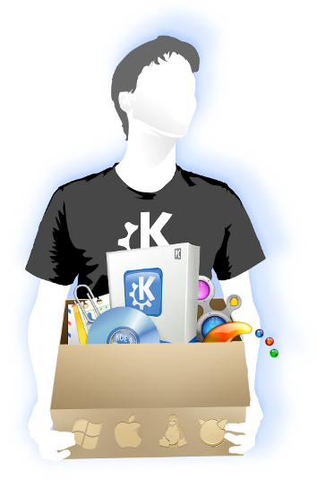

Apps
Workspaces
Framework

Turn your Windows, Mac or Linux into
Something beautiful.
Something filled with features.
Something that thinks the way you think.
Imagine typing in a name and the computer knows who it is. Imagine your desktop become your morning newspaper. Imagine your music player helping you learn more about your favourite artists.
KDE is a worldwide community who cares about their computers. Join KDE and share the experience.
I use:

or alternatively
Windows, Mac, Tablets and Mobiles
KDE offers an awesome Apps collection and a great Framework for developers